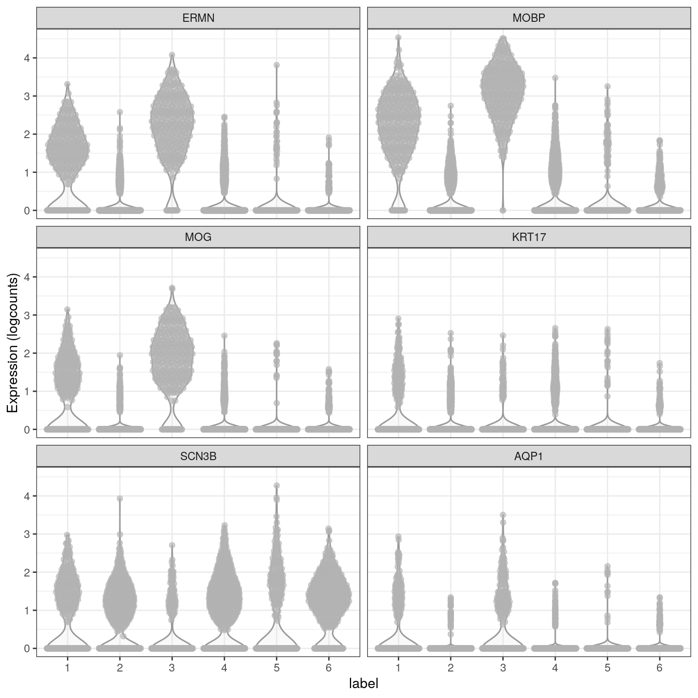

Chapter 14 Marker genes
14.1 Background
Chapter on identifying marker genes for clusters by differential gene expression testing.
14.2 Previous steps
Code to run steps from the previous chapters, to generate the SpatialExperiment object required for this chapter. For more details on each step, see the previous chapters.
# LOAD DATA
library(SpatialExperiment)
library(STexampleData)
spe <- load_data("Visium_humanDLPFC")
# QUALITY CONTROL (QC)
library(scater)
# subset to keep only spots over tissue
spe <- spe[, spatialData(spe)$in_tissue == 1]
# identify mitochondrial genes
is_mito <- grepl("(^MT-)|(^mt-)", rowData(spe)$gene_name)
# calculate per-spot QC metrics
spe <- addPerCellQC(spe, subsets = list(mito = is_mito))
# select QC thresholds
qc_lib_size <- colData(spe)$sum < 500
qc_detected <- colData(spe)$detected < 250
qc_mito <- colData(spe)$subsets_mito_percent > 30
qc_cell_count <- colData(spe)$cell_count > 12
# combined set of discarded spots
discard <- qc_lib_size | qc_detected | qc_mito | qc_cell_count
colData(spe)$discard <- discard
# filter low-quality spots
spe <- spe[, !colData(spe)$discard]
# NORMALIZATION
library(scran)
# quick clustering for pool-based size factors
set.seed(123)
qclus <- quickCluster(spe)
# calculate size factors
spe <- computeSumFactors(spe, cluster = qclus)
# calculate logcounts (log-transformed normalized counts)
spe <- logNormCounts(spe)
# FEATURE SELECTION
# remove mitochondrial genes
spe <- spe[!is_mito, ]
# fit mean-variance relationship
dec <- modelGeneVar(spe)
# select top HVGs
top_hvgs <- getTopHVGs(dec, prop = 0.1)
# DIMENSIONALITY REDUCTION
# compute PCA
set.seed(123)
spe <- runPCA(spe, subset_row = top_hvgs)
# compute UMAP on top 50 PCs
set.seed(123)
spe <- runUMAP(spe, dimred = "PCA")
# update column names
colnames(reducedDim(spe, "UMAP")) <- paste0("UMAP", 1:2)
# CLUSTERING
# graph-based clustering
set.seed(123)
k <- 10
g <- buildSNNGraph(spe, k = k, use.dimred = "PCA")
g_walk <- igraph::cluster_walktrap(g)
clus <- g_walk$membership
colLabels(spe) <- factor(clus)14.3 Marker genes
Identify marker genes by testing for differential gene expression between clusters.
We use the findMarkers implementation in scran (Lun, McCarthy, and Marioni 2016), using a binomial test, which tests for genes that differ in the proportion expressed vs. not expressed between clusters. This is a more stringent test than the default t-tests, and tends to select genes that are easier to interpret and validate experimentally.
library(scran)
# set gene names as row names for visualization purposes
rownames(spe) <- rowData(spe)$gene_name
# test for marker genes
markers <- findMarkers(spe, test = "binom", direction = "up")
# returns a list with one DataFrame per cluster
markers## List of length 6
## names(6): 1 2 3 4 5 6library(pheatmap)
# plot log-fold changes for one cluster over all other clusters
# selecting cluster 1
interesting <- markers[[1]]
best_set <- interesting[interesting$Top <= 5, ]
logFCs <- getMarkerEffects(best_set)
pheatmap(logFCs, breaks = seq(-5, 5, length.out = 101))
library(scater)
# plot log-transformed normalized expression of top genes for one cluster
top_genes <- head(rownames(interesting))
plotExpression(spe, x = "label", features = top_genes)